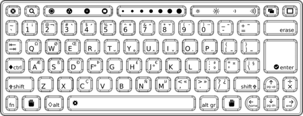

إختصارات لوحة المفاتيح
يمكنك الضغط على المفاتيح بدلا من تحريك المؤشر لبعض الإجراءات على XO. تعرض هذه القائمة المفاتيح التي تضغط في نفس الوقت نفسه للحصول على النتائج المذكورة. ملاحظة : لن تعمل جميع اختصارات في جميع الأنشطة.

| تركيبة الأزرار
|
النتيجة |
| ctrl + c (shift + ctrl + c in Terminal)
|
نسخ
|
| ctrl + v (shift + ctrl + v in Terminal)
|
لصق
|
| ctrl + x (shift + ctrl + x in Terminal)
|
قص
|
| ctrl + u عند استعمال نشاط التصفح
|
اطلق النشاط وأظهر النص المصدري لصفحة الويب.
|
| alt + esc
|
مغادرة النشاط
|
| alt + tab
|
انتقل الى النشاط التالي
|
| shift + alt + tab
|
انتقل الى النشاط السابق
|
| alt + enter
|
ملئ الشاشة
|
| alt + spacebar
|
أظهر/أخفي الاطار الرمادي
|
| alt + 1
|
حفظ نسخة من الشاشة
|
| ctrl + alt + erase
|
أعد تشغيل واجهة استخدام سكر (Sugar)
|
| fn + 1
|
شاشة الجوار
|
| fn + 2
|
شاشة المجموعة
|
| fn + 3
|
شاشة المنزل
|
| fn + 4
|
شاشة النشاط
|
| shift + alt + r
|
ادر الشاشة
|
| esc + Frame icon key + RightArrow + fn
(the four corners keys on the keyboard) |
اصلاح مساحة اللمس اذا واجهتك مشاكل
|
| fn + spacebar
|
أظهر النص المصدري للنشاط، غير متوافق مع جميع الأنشطة.
|
| fn + up arrow
|
Page Up
|
| fn + down arrow
|
Page Down
|
| fn + left arrow
|
Home
|
| fn + right arrow
|
End
|
| ctrl + brightness down
|
خفض الإضاءة |
| ctrl + brightness up
|
زيادة الإضاءة
|
| ctrl + volume down
|
خفض شدة الصوت |
| ctrl + volume up
|
رفع شدة الصوت
|
License : General Public License
Produced in FLOSS Manuals